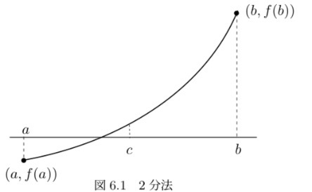

2次方程式 \( ax^2 + bx + c = 0 \) の解の公式は、
\( x = \frac{-b \pm \sqrt{b^2 - 4ac}}{2a} \) (3.4.1)
であるが、\( b > 0 \), \( b^2 \gg 4ac \) のときには \( -b + \sqrt{b^2 - 4ac} \) は近い値の引き算になる。（\( \gg \) は非常に大きいの意味）
また、\( b < 0 \), \( b^2 \gg 4ac \) のときは、\( -b - \sqrt{b^2 - 4ac} \) は近い値の引き算になる。 したがって \( b^2 \gg 4ac \) のときは、解のひとつで桁落ちが生じる可能性がある。
これを防ぐには、桁落ちを生じない一つの解を求めたのち、解と係数の関係を用いてもう一つの解を求める。解と係数の関係にはいくつかあるが、 ここで用いるのは、2つの解を \( x_1 \), \( x_2 \) とするとき、\( x_1 x_2 = \frac{c}{a} \) となる関係である。すなわち、次のようにすればよい。
\( x_1 = \begin{cases} \frac{-b - \sqrt{b^2 - 4ac}}{2a} & (b \geq 0) \\ \frac{-b + \sqrt{b^2 - 4ac}}{2a} & (b < 0) \end{cases} \) (3.4.2)
\( x_2 = \frac{c}{a x_1} \) (3.4.3)
上記のようにすれば、\( x_1 \) の分子は同符号の加算になるので桁落ちは生じない。
テキストにはない式で桁落ちを少なくする式に変形する問題もでる。
大きさが非常に異なる数値の足し算をするとき、小さい項が無視されることがある。例えば、有効桁5桁の計算では、
\( 12345 + 0.12345 = 12345 \)
となってしまい、\( 0.12345 \) の項が無視されてしまう。この現象を積残しまたは情報落ちと呼ぶ。
\( \sum_{n=1}^\infty \frac{1}{n^2} = \frac{\pi^2}{6} \)
となる。この左辺を計算する。 \( \sum_{n=1}^\infty \frac{1}{n^2} \) を数値計算でもとめることはできないので、大きい \( N = 100000 \) などに対して \( \sum_{n=1}^N \frac{1}{n^2} \) を計算する。
\( N \) を大きくすればするほど、上記の和は \( \frac{\pi^2}{6} \) に近づくはずである。 しかし、この和を計算するとき
\( 1 + \frac{1}{2^2} + \frac{1}{3^2} + \dots \)
というように計算すると、ある程度以上大きな \( N \) に対して \( \frac{1}{N^2} \) は非常に小さな値となり、この項は無視されることになり、それ以上 \( N \) を大きくしても近似は良くならない。
これを防ぐには項の順序を変えて和を計算すればよい。小さい項から足していくようにすれば積み残しは防げる。具体的には
\( \frac{1}{N^2} + \frac{1}{(N-1)^2} + \dots + \frac{1}{2^2} + 1 \)
2分法とは微積分学の中間値の定理を基礎としたものである。
定理 6.1（中間値の定理）: 関数 \( g(x) \) が \( a \leq x \leq b \) に対して連続で \( g(a) \neq g(b) \) であれば、 \( g(a) \) と \( g(b) \) の間の任意の値 \( \alpha \) に対して \( g(x_0) = \alpha \) となる \( a \leq x_0 \leq b \) が存在する。
図6.1 2分法
2分法による非線形方程式の数値解のアルゴリズムは以下のようになる。
\( f(x) = 0 \) となる \( x \) を求める。
終了条件には以下のものを用いる。
ニュートン法は、一般的に2分法より速く収束する。ニュートン法では \( f(x) \) は微分可能であると仮定する。

図6.2 ニュートン法
ニュートン法は一般には収束が速いという利点があるが、次のような場合には収束しないことがあるので注意が必要である。
積分区間 \( [a, b] \) 間の関数 \( f(x) \) を両端点 \( (a, f(a)) \), \( (b, f(b)) \) を結ぶ直線で近似する：
\( f(x) \approx \frac{f(b) - f(a)}{b - a} (x - a) + f(a) = \frac{f(b) - f(a)}{b - a} x + \frac{b f(a) - a f(b)}{b - a} \)
これより、
\( \int_a^b f(x) dx \approx \int_a^b \left( \frac{f(b) - f(a)}{b - a} x + \frac{b f(a) - a f(b)}{b - a} \right) dx \)
\( = \frac{f(b) - f(a)}{b - a} \int_a^b x dx + \frac{b f(a) - a f(b)}{b - a} \int_a^b dx \)
\( = \frac{f(b) - f(a)}{b - a} \left[ \frac{1}{2}x^2 \right]_a^b + \frac{b f(a) - a f(b)}{b - a} [x]_a^b \)
\( = \frac{f(b) - f(a)}{b - a} \left( \frac{1}{2}(b^2 - a^2) \right) + \frac{b f(a) - a f(b)}{b - a} (b - a) \)
\( = \frac{b - a}{2} (f(b) + f(a)) \) (4.3.1)
積分区間 \( [a, b] \) が \( n \) 個の等分点で与えられている場合、\( n \) 個の分割領域にそれぞれ式 (4.3.1) の台形公式を用いる。\( h = \frac{b - a}{n} \) として、 \( x_0 = a \), \( x_1 = a + h \), \( x_i = a + i h \), \( x_n = b \) とする。
\( \int_a^b f(x) dx \approx \sum_{i=0}^{n-1} \frac{h}{2} (f(x_i) + f(x_{i+1})) \)
\( = \frac{h}{2} \left( \sum_{i=0}^{n-1} f(x_i) + \sum_{i=0}^{n-1} f(x_{i+1}) \right) = \frac{h}{2} \left( \sum_{i=0}^{n-1} f(x_i) + \sum_{i=1}^{n} f(x_i) \right) \)
\( = \frac{h}{2} \left( f(a) + 2 \sum_{i=1}^{n-1} f(x_i) + f(b) \right) \) (4.6.1)
Input: f(x) (関数), a (積分の下限), b (積分の上限), n (分割数)
Output: 積分値 I
h = (b - a) / n
I = f(a) + f(b)
For i = 1 to n-1:
I = I + 2 * f(a + i * h)
I = h / 2 * I
Return I
微分方程式を数値的に解く一番簡単な方法は、以下に述べるオイラー法である。オイラー・コーシー (Euler-Cauchy) 法ともいう。この方法は解の精度や安定性に問題があるので、このままで用いられることは少ないが、様々な手法の基本となるので重要である。
式 (8.1.3) の解 \( x(t) \) が微分可能な関数である場合には、テーラー展開により次式が成り立つ。
\( x(t + h) = x(t) + h \frac{dx(t)}{dt} + \frac{h^2}{2} \frac{d^2 x(t)}{dt^2} + \dots \)
\( h \) が小さいと仮定して、この式の右辺の第3項以下を無視すると、以下の近似式が得られる。
\( x(t + h) \approx x(t) + h \frac{dx(t)}{dt} \)
\( t = t_n \) とすると \( t_n + h = t_{n+1} \) なので、以下が得られる。
\( x(t_{n+1}) \approx x(t_n) + h f(t_n, x(t_n)) \)
これより \( x(t_n) \) の近似値 \( x_n \) を以下のように求めるのがオイラー法である。